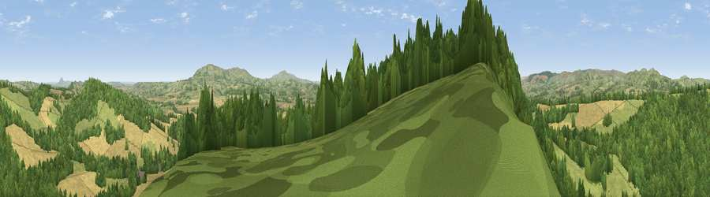

Viewpoint near Munslow
#9799 in England · top 26% of its area beats it · near MunslowThe view, rendered

A 360° render of this exact spot computed from the terrain model, tree cover and land cover — summer colours, afternoon light, calibrated against photographs of famous viewpoints. Real trees, hedges and buildings will differ in detail.
The panorama
Grey silhouette: terrain skyline in each direction (720 bearings, Earth curvature and refraction included). Dashed green: skyline with trees (+15 m) and buildings (+8 m) as obstacles. Blue strip: how far the ground is visible on each bearing.
Where the view opens
Wedge length = distance to the farthest visible ground on that bearing (vegetation-aware). Rings at 10, 25 and 50 km.
What fills the view
54% woodland · 30% grassland · 16% cropland
Angular shares of the visible panorama (visual magnitude), not map area. Landscape diversity 0.44 (0–1 Shannon).
Key numbers
More beautiful places nearby
The staircase of upgrades: each row has a higher view potential than everything closer. Driving times are estimates from straight-line distance, calibrated against real road routing — check an actual route before setting out.
| Place | Direction | Drive | Score |
|---|---|---|---|
| Middlehope Hill | WSW · 1 km | ~2 min | 72.6 |
| Viewpoint near Broadstone | NE · 2 km | ~5 min | 72.8 |
| Diddlebury Common | SW · 4 km | ~9 min | 74.5 |
| Hope Bowdler Hill | NW · 6 km | ~13 min | 78.9 |
| Caer Caradoc Hill | NNW · 7 km | ~15 min | 81.7 |
| Viewpoint near Abdon | ESE · 8 km | ~17 min | 82.6 |
| The Lawley | NNW · 9 km | ~17 min | 85.8 |
| Viewpoint near Little Wenlock | NNE · 22 km | ~37 min | 86.6 |
52.49694, -2.71914 · source: screening · position refined by local search. Computed location — check access rights before visiting.